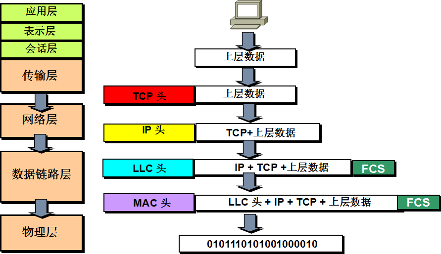
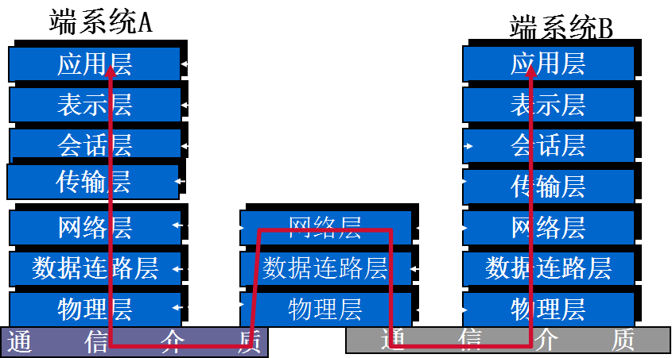
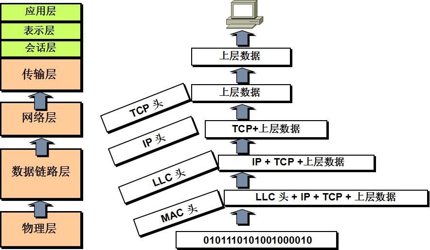
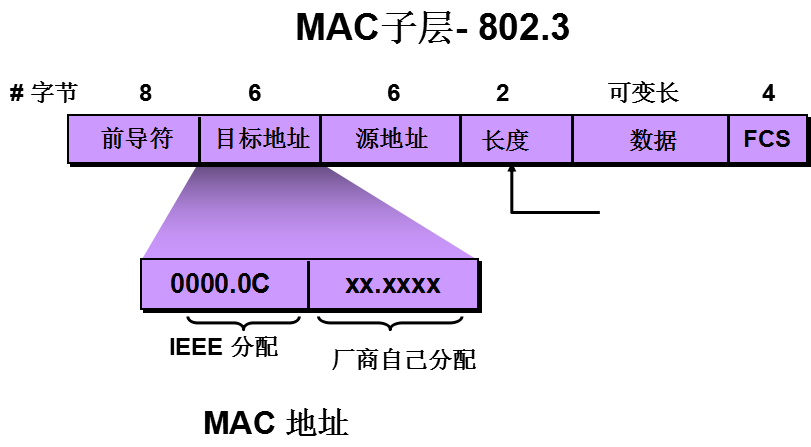

title: Note ISO OSI
OSI分层模型
tips:
ISO：国际标准化组织（International Organization for Standardization）
OSI：开放系统互联（Open System Interconnection）
分层优点：
促进标准化工作,允许各个供应商进行开发.
各层间相互独立,把网络操作分成低复杂性单元.
灵活性好,某一层变化不会影响到别层，设计者可专心设计和开发模块功能.
各层间通过一个接口在相邻层上下通信
应用层：提供用户接口
主要协议：FTP、HTTP
是普通用户直接接触的一层
表示层：对数据进行表示&加密
主要协议：ASCII、JPEG、EBCDIC（Extended Binary Coded Decimal Interchange Code
EBCDIC（Extended Binary Coded Decimal Interchange Code）国际商用机器公司(IBM)于1963年-64年间推出的字符编码表
会话层：保证不同应用之间的数据区分，
（区分对端到底发出的哪一块是FTP的数据流，哪一块是HTTP的数据流）
传输层：可靠或不可靠的数据传输；数据重传前的错误纠正（TCP）
代表协议：TCP、UDP
网络层：提供路由器用来决定路径的逻辑寻址和转发
代表协议：IP、IPX
数据链路层：将比特组合成字节进而组合成帧；用MAC地址访问介质；错误发现但不能纠正
MAC地址是由12个点分十六进制组成的全球唯一的物理地址
代表协议：802.3/802.2、HDLC
物理层：设备之间接收或发送比特流；说明电压、线速和线缆等
PDU（Protocol Data Unit）：每一层使用自己曾的协议和别的系统的对应层相互通信，协议层的协议在对等层之间交换的信息叫协议数据单元
- 上层（应用层、表示层、会话层）使用 信息（Message）
- 传输层：段（Segment）
- 网络层：分组/包（Packet）
- 数据链路层：帧（Frame）
- 物理层：比特（Bit）
封装（Encapsulate/Encapsulation）&解封装（
封装：数据要通过网络进行传输，要从高层一层一层的向下传送，绕过一个主机要传送数据到别的主机，先把数据装到一个特殊协议报头中，这个过程叫——封装
封装分为切片和加控制信息
层 | 数据
------------|---------------------------
应用层 |
表示层 | 上层数据
会话层 |
------------|--------------------------
传输层 | 【TCP头】+上层数据
------------|---------------------------
网络层 | 【IP头】+TCP+上层数据
------------|--------------------------
数据链路层| 【LLC头】+IP+TCP+上层数据+【FCS】
------------|----------------------------------------
物理层 | 【MAC头】+LLC+IP+TCP+上层数据+【FCS】
| 0101110101001000010
封装过程

FCS：包含循环冗余校验值
收到值之后对端会进行计算，若值相同，则说明数据没有被篡改，说明数据可信任；
当值不同时，数据被丢弃。
数据链路层错误发现功能（只能发现但不能改正）
数据传输过程

解封装：上述的逆向过程

物理层设备
集线器：
- 所有设备在同一冲突域
- 所有设备在同一广播域
- 所有设备共享相同带宽
tips：
- 冲突（collision）：以太网中两个节点同时传输数据时，从两个设备发出的帧将会碰撞，在物理介质上项羽，彼此数据都会被破坏
- 冲突域（collision domain）：一个支持共享介质的网段
- 广播域（broadcast domain）：广播帧传输的网络范围，一般是路由器来设定边界（因为router不转发广播）
集线器：同一个冲突域
- 接入设备越多冲突几率越大
- 使用CSMA/CD技术
CSMA/CD（载波侦听多路访问/冲突检测）（Carrier Sense Multiple Access/Collision Detect）：一种介质介质访问控制方法，当在同一个共享网络中的不同节点同时传送数据包时，不可避免的会产生冲突，而CSMA/CD机制就是用来解决这种冲突问题
工作原理：
- 先听先发
- 边听边发
- 冲突停止
- 随机重发
当一个节点想在网络中发送数据时，它首先检查线路上是否有其他主机的信号在传送：如果有，说明其他主机在发送数据，自己则利用退避算法等一会再试图发送；如果线路上没有其他主机的信号，自己就将数据发送出去，同时，不停的监听线路，以确信其他主机没有发送数据，如果检测到有其他信号，自己就发送一个JAM阻塞信号，通知网段上的其他节点停止发送数据，这时，其他节点也必须采用退避算法等一会再试图发送。
重要特性
- 不能进行全双工通信，只能使用双向交替通信（半双工通信）
- 每个站发送数据之后的一小段时间内，存在遭遇碰撞的可能
- 这种发送的不确定性使整个以太网平均通信量远小于以太网最高数据率
数据链路层
- 定义源和目标的物理地址
- 与帧关联的高层协议（Service Access Point）
- 网络拓扑
- 帧顺序
- 数据流控制
- 有向或无向连接
MAC子层：负责MAC寻址和定义介质访问控制方法
MAC子层一般访问控制方式：
争用式：冲突不可避免；CSMA/CD；FCFS（First Come First Service）
轮流式：访问时间可预见，不发生冲突；但要有Token令牌（令牌环网）
MAC子层协议：802.3、802.5、FDDI（Fiber Distributed Data Interface）
该三种LAN技术不同在于帧结构和访问机制不同
LLC子层（Logical Link Control）：为上层协议提供SAP服务访问点，并为数据加上控制信息
LLC子层协议：802.2
802.2协议只在LLC子层，为以太网和令牌环网提供通用功能
- 数据链路层功能

目标地址
总结表
设备 | PDU | 层 | 说明 | 代表协议 | 功能
--------|------------|--------------|---------------------|-----------------|---------
| Message| 应用层 | 用户接口层 | FTP、HTTP |
| Message| 表示层 | 对数据进行表示&加密| ASCII、JPEG |
| Message| 会话层 | 保证不同应用之间的数据区分| |
| Segment| 传输层 | 可靠或不可靠的数据传输；数据重传前的错误纠正| TCP、UDP |
路由器 | Packet | 网络层 | 提供路由器用来决定路径的逻辑寻址和转发 | IP、IPX |
交换机 | Frame | 数据链路层| 将比特组合成字节进而组合成帧；用MAC地址访问介质；发现错误但不能纠正（直接丢弃） | 802.3、802.2、HDLC |
集线器 | Bit | 物理层 | 设备之间接受或发送比特流；说明电压、线速和线缆等